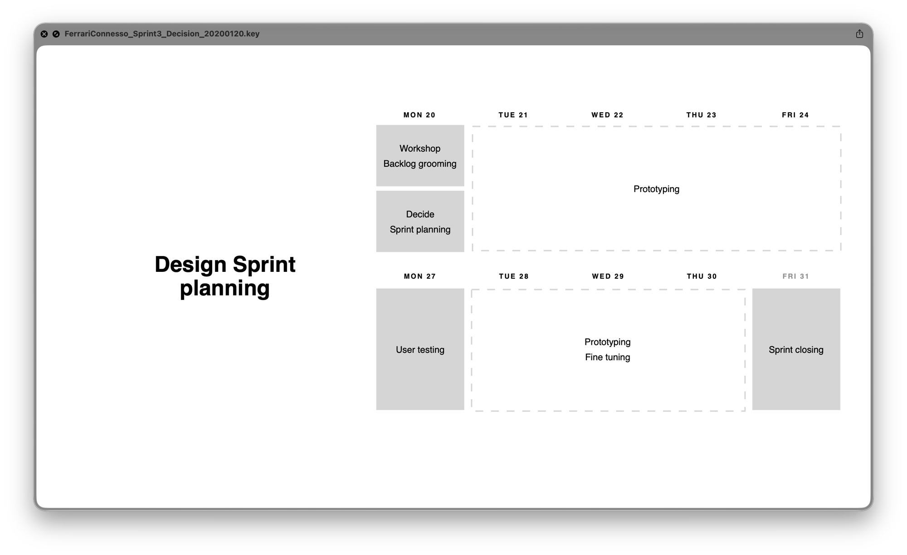

AKQA Milan · Sep 2019–Nov 2020
Ferrari Connesso
The Purosangue was still a list of desired hardware when we joined. No screens designed, no experience defined, just engineering specs and an open question: what should owning a connected Ferrari actually feel like?

Context
Hardware decisions before the experience existed
When we joined, the Purosangue was a list of desired hardware. Ferrari's engineers had written 83 features and specified the parts. No one had designed a screen or defined how owning the car would feel. Ferrari was making its first serious move into connected cars, and they asked us to represent UX and CX in the early engineering conversations. I had to keep hardware decisions from closing doors before anyone had defined the experience. I kept two questions in the room: what does a Ferrari owner need this car to do, and which hardware choices would make that impossible?
Reading owners without direct access
Dealers over forums
Ferrari did not let us talk to owners directly. So I sent the team to the people who knew owners best. We interviewed top dealers around the world and observed owners at several Ferrari presentations. We trusted the dealers' accounts because they sit closest to how owners live with the cars. We read Ferrari's customer care data and found one complaint above the rest: the car was not ready to drive when owners first went to use it.
Scoring features on owner terms
A decision tool Ferrari could own
Ferrari brought deep engineering rigour to hardware. They had no equivalent for software, no way to judge a feature on owner terms instead of engineering terms. I built them one.
I set five criteria per feature: customer benefit, use frequency, WOW factor, brand coherence, and distinctiveness. We scored every feature, then checked the scores against three voices: owners, the market, and Ferrari's business, comparing the data from each. We clustered the features and assigned each cluster to a release tier: Minimum Viable, Minimum Valuable, Minimum Delightful.
Ferrari could own this tool and run it themselves. They could now apply the rigour of a suspension system or a body line to whether a remote diagnostics feature belonged in Wave 1 or Wave 3. We reached calls the raw feature list would not have. We ranked over-the-air updates above remote door lock and unlock, because the platform had to stay future-proof.

Pushing back
A client who hired you for your judgement stops trusting you the moment you reflect their assumptions back at them
I could have said yes and managed expectations down. I did not. We were already under strain with Ferrari. They had hired us for our judgement, and feeding their own assumptions back to them would have spent the trust we needed. So I pushed back where it counted.
When Ferrari leaned toward a proprietary navigation system, I told them owners did not want one. Owners wanted Apple CarPlay. I made that case from the research, not from preference, and I held it.
After that, Ferrari trusted us differently. We moved from asking what the app should do to asking where ownership actually happens.
The vehicle-readiness feature
Not a reactive alert. A proactive status.
With Ferrari's backing, we ran research into who actually owned these cars. Two kinds of owner shared the same car. One tracked performance data after every trip. The other had bought a Ferrari as a design and lifestyle statement and cared little for telemetry. Both moved through the same rhythm before a drive: each one checked the car was ready before reaching the garage.
I designed the vehicle-readiness feature around that moment. We worked directly with Ferrari's car engineers to connect component telemetry to the app. We did not build a reactive alert. We built a proactive status that told the owner the car was ready, which answered the top complaint from the care data: unavailability at first use. Eight owners tested it across moderated interviews and usability sessions, and they rated it the highest of any feature in Sprint 1.
We also made a design fiction video of the full ownership journey. No one had asked for it. We made the case that it was necessary, and we made it.
Outcomes
Work that outlasted the contract
We delivered the prototype and the specification on time for Ferrari's request for proposal (RFP), the deadline by which Ferrari needed the work in hand to invite bids from providers for the next phase. We took on more projects after that: a preowned-car website, a dealer website, and others, each one more UX-driven than the last. We still work with Ferrari today.
Ferrari launched the Purosangue in 2022. We had shaped its connected experience directly, in those first rooms full of engineering specs.